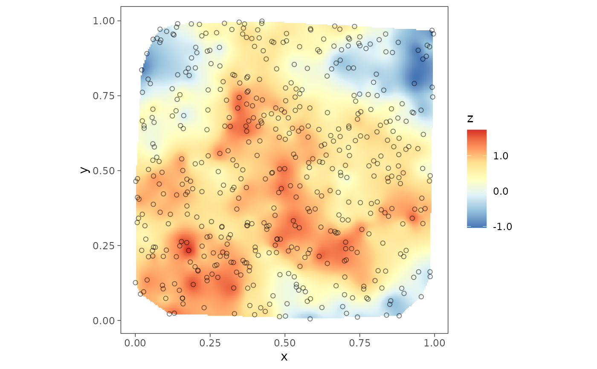

Dataset of size 500 with a Gaussian response variable, simulated with spatial coordinates sampled uniformly from the unit square. The model includes one covariate and spatial random effects induced by a Matérn covariogram.
Usage
data(simGaussian)Format
a data.frame object.
s1, s22-D coordinates; latitude and longitude.
x1a covariate sampled from the standard normal distribution.
yresponse vector.
z_truetrue spatial random effects that generated the data.
Details
The data is generated using the model $$ y = X \beta + z + \epsilon, $$ where the spatial effects \(z \sim N(0, \sigma^2 R)\) is independent of the measurement error \(\epsilon \sim N(0, \delta^2 \sigma^2 I_n)\) with \(\delta^2\) being the noise-to-spatial variance ratio and \(R\) being a \(n \times n\) correlation matrix given by the Matérn covariogram $$ R(s, s') = \frac{(\phi |s-s'|)^\nu}{\Gamma(\nu) 2^{\nu - 1}} K_\nu(\phi |s-s'|), $$ where \(\phi\) is the spatial decay parameter and \(\nu\) the spatial smoothness parameter. We have sampled the data with \(\beta = (2, 5)\), \(\phi = 2\), \(\nu = 0.5\), \(\delta^2 = 1\) and \(\sigma^2 = 0.4\). This data can be generated with the code as given in the example.
Author
Soumyakanti Pan span18@ucla.edu
Examples
set.seed(1729)
n <- 500
beta <- c(2, 5)
phi0 <- 2
nu0 <- 0.5
spParams <- c(phi0, nu0)
spvar <- 0.4
deltasq <- 1
sim1 <- sim_spData(n = n, beta = beta, cor.fn = "matern",
spParams = spParams, spvar = spvar, deltasq = deltasq,
family = "gaussian")
plot1 <- surfaceplot(sim1, coords_name = c("s1", "s2"), var_name = "z_true",
mark_points = TRUE)
plot1

library(ggplot2)
plot2 <- ggplot(sim1, aes(x = s1, y = s2)) +
geom_point(aes(color = y), alpha = 0.75) +
scale_color_distiller(palette = "RdYlGn", direction = -1,
label = function(x) sprintf("%.0f", x)) +
guides(alpha = 'none') + theme_bw() +
theme(axis.ticks = element_line(linewidth = 0.25),
panel.background = element_blank(), panel.grid = element_blank(),
legend.title = element_text(size = 10, hjust = 0.25),
legend.box.just = "center", aspect.ratio = 1)
plot2